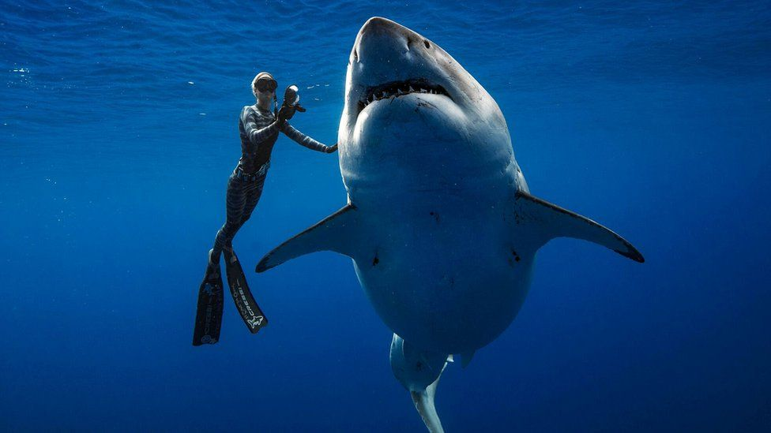

What Are Sharks?
Sharks are a group of elasmobranch fish characterized by a cartilaginous skeleton, five to seven gill slits on the sides of the head, and pectoral fins that are not fused to the head. Modern sharks are classified within the clade Selachimorpha (or Selachii) and are the sister group to the rays. However, the term "shark" has also been used for extinct members of the subclass Elasmobranchii outside the Selachimorpha, such as Cladoselache and Xenacanthus, as well as other Chondrichthyes such as the holocephalid eugenedontidans.
How Old Are Sharks?
Under this broader definition, the earliest known sharks date back to more than 420 million years ago.
How Many Species of Sharks?
Acanthodians are often referred to as "spiny sharks"; though they are not part of Chondrichthyes proper, they are a paraphyletic assemblage leading to cartilaginous fish as a whole. Since then, sharks have diversified into over 500 species. They range in size from the small dwarf lanternshark (Etmopterus perryi), a deep sea species of only 17 centimetres (6.7 in) in length, to the whale shark (Rhincodon typus), the largest fish in the world, which reaches approximately 12 metres (40 ft) in length.[3] Sharks are found in all seas and are common to depths of 2,000 metres (6,600 ft). They generally do not live in freshwater although there are a few known exceptions, such as the bull shark and the river shark, which can be found in both seawater and freshwater.[4] Sharks have a covering of dermal denticles that protects their skin from damage and parasites in addition to improving their fluid dynamics. They have numerous sets of replaceable teeth.[5]

| Australia | USA |
| Brazil |